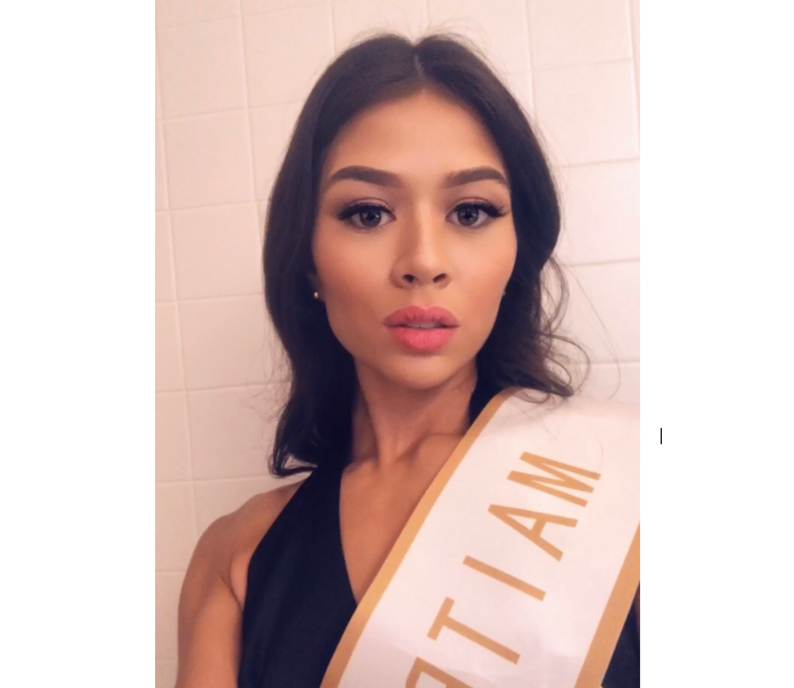

About Sydney
 Hello! My name is Sydney Weaver, welcome to my first webpage. I am a new student at the KU Bootcamp program. Previously, I spent a couple years at the School of Engineering at The University of Kansas, where I studied Chemical Engineering. I decided that engineering was not the path for me, and decided to follow the footsteps of my father and two brothers by learning to code. I currently live in Lawrence, Kansas. When I first moved to Lawrence for school, I loved it so much that I found it difficult to leave. In my free time I like to spend time with the people closest to me. I also love my alone time! When I'm by myself, I love listening to music, watching movies or documentaries, and working out. I also find cooking and cleaning to be very therapeutic. In addition, I have a passion for traveling. My favorite destination is Kota Kinabalu, Malaysia, where my mother is from.